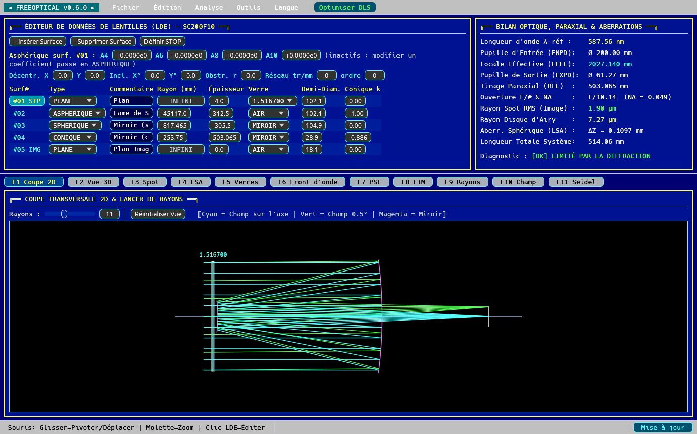
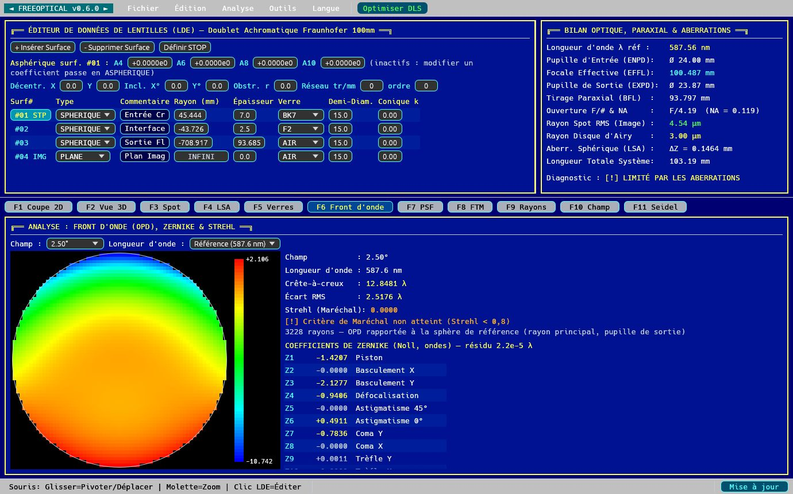
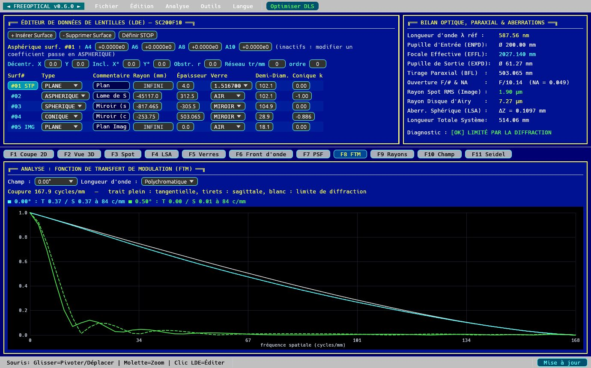
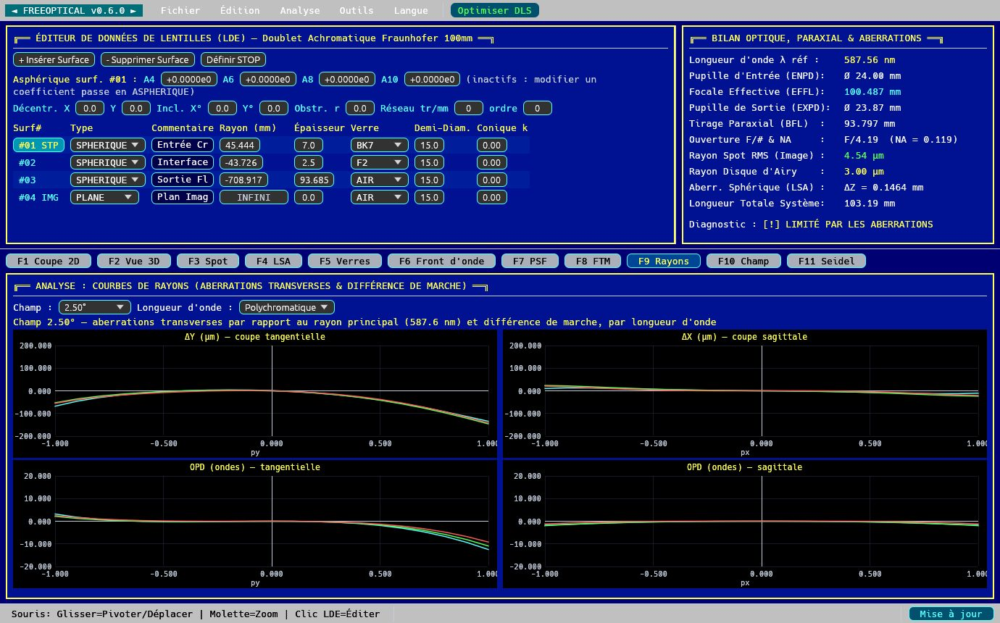
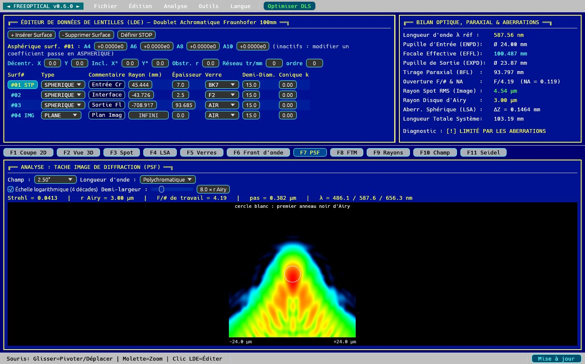
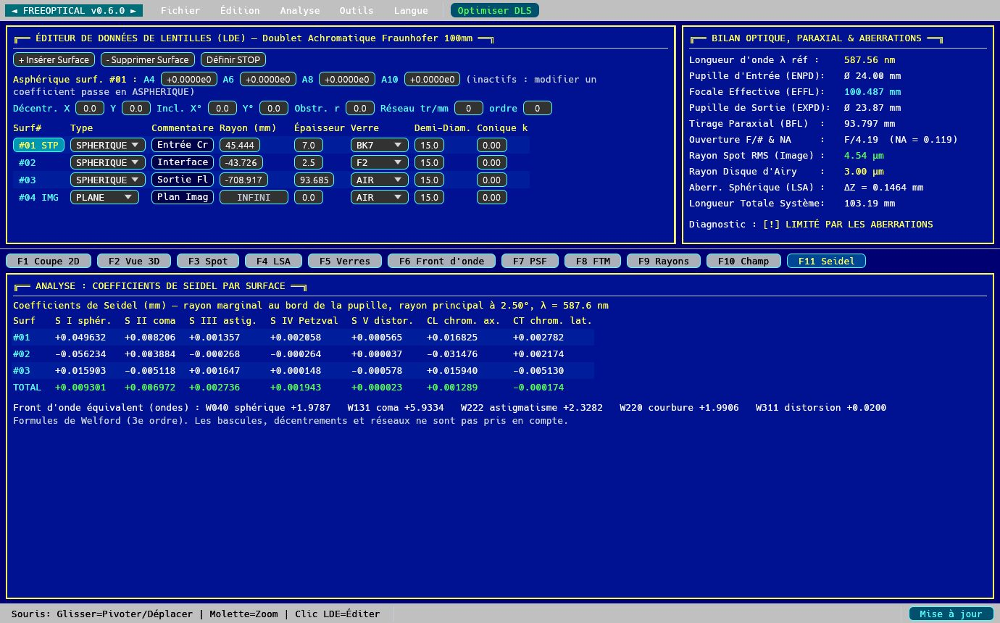

Fonctions
Lancer de rayons exact
Tracé séquentiel en 3D : sphères, coniques, asphères paires, miroirs, surfaces basculées et décentrées (systèmes repliés), obstructions centrales, réseaux de diffraction.
Analyses ondulatoires
Différence de marche (OPD), carte de front d'onde, 37 polynômes de Zernike, rapport de Strehl, PSF de diffraction et FTM tangentielle et sagittale.
Aberrations
Spot diagram, courbes de rayons, aberration sphérique longitudinale, courbure de champ, distorsion et coefficients de Seidel surface par surface.
Vrais verres
Formules de Sellmeier, verres Schott intégrés, silice et fluorine ; import des catalogues Zemax .agf (Schott, Ohara, CDGM…).
Optimisation
Moindres carrés amortis (DLS) sur tous les champs et toutes les couleurs : rayons, épaisseurs, coniques, asphériques, focale et contraintes.
Ouvert et scriptable
Interface graphique, interface terminal et serveur MCP pour piloter les calculs par un agent IA. Import des fichiers TDESIGN, LENSDES et RAYTRACE (Rutten et van Venrooij).
Captures d'écran












Installation
Debian, Ubuntu et dérivées (amd64) : téléchargez le paquet .deb de la dernière version, puis :
sudo apt install ./freeoptical_0.6.0_amd64.deb
Les versions suivantes s'installent depuis le bouton Mise à jour du logiciel. Depuis les sources : cargo build --release.
Pour qui ?
Astronomes amateurs qui taillent leurs miroirs ou conçoivent leurs instruments, étudiants et enseignants en optique, ingénieurs qui cherchent une alternative libre aux logiciels commerciaux de conception optique comme Zemax OpticStudio, Code V ou OSLO.
Langues
Interface en français, anglais et allemand, au choix (menu Langue).